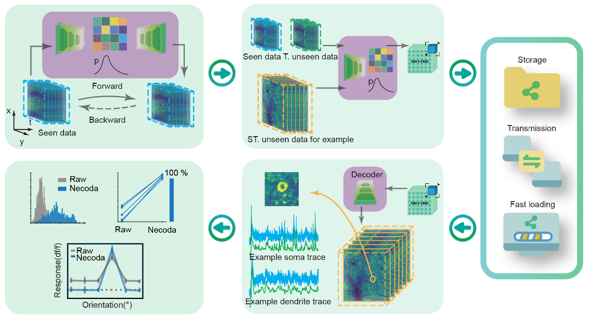

Necoda: High-Fidelity Functional Neural Data Compression via Neural Representations Enhances Data Sharing
Abstract
Large-scale neuroimaging datasets are crucial for advancing neuroscience, yet their terabyte-scale size severely hinders data sharing, reuse, and reproducibility. Existing methods for compressing neuroimaging data either fall short of sufficient compression ratio or degrade neurophysiological fidelity. Here we present Necoda, a deep learning method that compresses functional imaging data by over 1,000-fold while preserving high-fidelity neural signals. Necoda leverages a content-adaptive neural network with either a spatiotemporal ar-chitecture or an entropy model depending on data characteristics, generalizes across unseen data, and enables one-time training for compressing numerous experiments. Necoda outperforms existing video codecs in both compression ratio and reconstruction quality on NAOMi simulation benchmarks, and demonstrates broad effectiveness across datasets from diverse species, brain regions and imaging modalities. Importantly, scientific findings, from single-cell tuning properties to population-level dynamics, are faithfully replicated from the compressed data. Necoda provides a practical solution to the data-sharing bottleneck, thus allowing broad access to large-scale datasets, acceler-ating neuroscience discoveries and ensuring reproducibility.
Necoda overview
Overall architecture and performance of Necoda
Necoda delivers better compression performance.
When benchmarked against other traditional and learned video compression methods, Necoda demonstrates superior performance in reconstruction quality, compression ratio, and speed for functional neural data. It uniquely provides an efficient and robust solution that preserves vital physiological information at high compression ratios where other methods either fail, are unstable with noise, or lack the practical generalization needed for routine use.
Necoda shows widespread application.
Necoda demonstrates broad effectiveness across datasets from diverse species, brain regions and imaging modalities. While enabling thousand-fold compression, near-instantaneous downloads and high-speed local Browse, Necoda faithfully preserves essential physiological signals and even enhances the signal-to-noise ratio. This establishes it as a robust and versatile tool for dramatically improving data sharing, accessibility, and backup in neuroscience research.
Necoda enhances TB level data sharing and reproduction.
By drastically reducing download time from months to under an hour and accelerating data processing, Necoda allows scientists to fully and rapidly reproduce published findings, from raw data to final conclusions, within half a day.